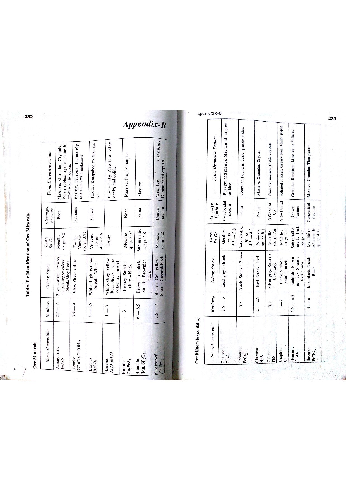

Q138: Spatial Data Structures: The Spaghetti Vector Model vs. Raster Compression Systems
In Geographic Information Science, digital cartography, and spatial database design, spatial data structures define the specific data storage formats and compression algorithms used to encode geometric features into digital computer memory (Burrough & McDonnell, 1998; Chang, 2019; Bangar, p. 223).
Spatial structures are broadly partitioned into two competing paradigms: Vector Data Models (coordinate-based geometry) and Raster Data Structures (grid-cell pixel matrices and compression algorithms).

The Spaghetti Vector Model
The Spaghetti Model is the simplest and earliest Vector Data Model in computerized cartography (Bangar, p. 223; Burrough & McDonnell):
- Structural Definition: A collection of independent, unlinked coordinate pairs representing points, polylines, and polygons. Features are stored as raw strings of $[X, Y]$ coordinates with zero topological relationships.
- Why Termed "Spaghetti": The name stems from the physical analogy of dropping a bowl of cooked spaghetti noodles on a floor. Graphic lines cross, overlap, and terminate randomly in Cartesian coordinate space without any software awareness of intersection nodes, shared boundaries, or spatial contiguity.
- Severe Data Redundancy: If two adjacent geological formations (e.g., a limestone unit and a shale unit) share a common contact boundary, that shared boundary is digitized and recorded twice independently—once for the limestone polygon and once for the shale polygon. Slivers and gaps inevitably occur.
- Definitive Conclusion: The Spaghetti model is unequivocally a VECTOR data model; it has no relation to raster cell matrices.

1. Quadtree (Hierarchical Raster Subdivision)
A sophisticated 2D hierarchical spatial data structure based on the recursive decomposition of a raster grid into quadrants:
- An entire square raster image ($2^N \times 2^N$ cells) is treated as the root node.
- If all pixels in the grid have the identical attribute value, the node is homogeneous (leaf node).
- If the grid contains heterogeneous pixel values, it is split into four equal quadrants: North-West (NW), North-East (NE), South-West (SW), and South-East (SE).
- The process repeats recursively down to individual pixels until every terminal node is homogeneous. This provides immense data compression for large, uniform geological terrain blocks.
2. Run-Length Encoding (RLE — 1D Raster Compression)
A classical, lossless scanline compression algorithm applied row-by-row across raster matrices:
- Instead of storing every pixel individually (e.g., $A, A, A, A, A, B, B, B$), the algorithm stores ordered pairs consisting of the run count and the pixel value: $(5, A), (3, B)$.
- Extremely efficient for thematic geological maps where large areas contain contiguous expanses of identical lithological rock types.
3. Block Encoding (2D Rectangular Compression)
A two-dimensional extension of run-length encoding where homogeneous raster areas are aggregated into variable-sized square or rectangular blocks:
- Each block is stored as four parameters: the origin coordinates $(X, Y)$, block width/size ($S$), and cell attribute value ($V$).
- Eliminates row-by-row scanline overhead, yielding compact 2D storage.
| Data Model / Structure | Fundamental Domain | Internal Storage Format | Topology Present? | Primary Application |
|---|---|---|---|---|
| Spaghetti Model | Vector | Independent, unordered coordinate strings: $[(X_1, Y_1), \dots, (X_n, Y_n)]$ | No (Non-topological; lines cross freely) | Computer-Aided Drafting (CAD), basic graphic rendering, legacy digitizer input. |
| Topological Vector (Coverage) | Vector | Node tables, Arc-Node lists, Left-Right polygon topology tables | Yes (Explicit adjacency, connectivity, containment) | Advanced spatial analysis, network tracing, contiguous geological polygon mapping. |
| Quadtree | Raster | Hierarchical quaternary tree graph ($4^k$ child nodes) | Implicit spatial index | Lossless raster compression, fast spatial indexing, multi-resolution pyramids. |
| Run-Length Encoding (RLE) | Raster | Sequential scanline tuples: $[(\text{Count}, \text{Value})]$ | No (Grid-based) | Standard TIFF/GeoTIFF raster compression, thematic categorical raster maps. |
| Block Encoding | Raster | 2D square block tuples: $[(X, Y, \text{Width}, \text{Value})]$ | No (Grid-based) | Two-dimensional contiguous zone raster compression. |
- (A) Quadtree
- (B) Spaghetti
- (C) Run-length encoding
- (D) Block encoding
A quadtree is a premier hierarchical 2D raster data structure that recursively subdivides heterogeneous raster image blocks into four quadrants (NW, NE, SW, SE) until all leaf nodes are homogeneous. Because it is a bona fide raster data structure, it is not the correct answer to this negative prompt.
The Spaghetti Model is unequivocally a Vector data structure, originally introduced in early computer-aided design (CAD) and rudimentary GIS software (Bangar, p. 223; Burrough & McDonnell, Ch. 3). It stores points, lines, and polygons as independent coordinate lists $[(X_1, Y_1), \dots, (X_n, Y_n)]$ without maintaining shared nodes, polygon adjacency, or line connectivity. Because it operates entirely on Cartesian vector coordinates rather than grid-cell pixel arrays, it is NOT a raster data structure.
Run-length encoding (RLE) is one of the most widely implemented raster compression data structures in GIS (used in GeoTIFF, ESRI Grid, and MrSID). It compresses adjacent cells along raster scanlines into run-length pairs $[(\text{Count}, \text{Value})]$. Being an authentic raster structure, it cannot be chosen.
Block encoding is a two-dimensional raster data compression method that aggregates square or rectangular clusters of identical grid cells into discrete blocks $[(X, Y, \text{Size}, \text{Value})]$. It is a legitimate raster data structure and is therefore incorrect.
| Characteristic | Spaghetti Vector Model | Run-Length Encoding (Raster) | Quadtree (Raster) | Block Encoding (Raster) |
|---|---|---|---|---|
| Spatial Domain | Vector (Point, Line, Poly) | 1D Scanline Raster | 2D Hierarchical Raster | 2D Block Raster |
| Compression Type | None (Raw coordinate lists) | Lossless 1D run compression | Lossless hierarchical tree | Lossless 2D cluster compression |
| Data Redundancy | Extreme: Shared borders stored twice | Low for contiguous zones | Very low for large homogenous regions | Low for regular geometric blocks |
| Topological Capability | Zero: No adjacency or network flow | Implicit neighborhood via grid indices | Fast spatial hierarchy indexing | Implicit via Cartesian block coordinates |
A thematic geological raster grid row of 16 pixels contains the following lithological classifications: $$\text{Row: } [G, G, G, G, G, G, S, S, S, S, B, B, B, B, B, B]$$ (where $G = \text{Granite}, S = \text{Shale}, B = \text{Basalt}$). (a) Write the compressed Run-Length Encoded string in $[(\text{Count}, \text{Value})]$ format. (b) Calculate the compression ratio if uncompressed pixels require 1 byte each, and each RLE tuple requires 2 bytes ($1\text{ byte for count} + 1\text{ byte for value}$).
1. RLE compressed string: $$[(6, G), (4, S), (6, B)]$$ 2. Uncompressed storage size: $$S_{\text{uncompressed}} = 16\text{ pixels} \times 1\text{ byte} = 16\text{ bytes}$$ 3. RLE compressed storage size (3 tuples): $$S_{\text{compressed}} = 3\text{ tuples} \times 2\text{ bytes/tuple} = 6\text{ bytes}$$ 4. Compression Ratio ($CR$): $$CR = \frac{S_{\text{uncompressed}}}{S_{\text{compressed}}} = \frac{16\text{ bytes}}{6\text{ bytes}} \approx 2.67 : 1 \quad (\approx 62.5\% \text{ storage reduction})$$
An $8 \times 8$ binary raster grid ($64\text{ total cells}$) contains an ore body located entirely within the top-left quadrant (cells $(0,0)$ to $(3,3)$ are all value $1$), while all other 48 cells in the remaining three quadrants are homogeneous barren host rock (value $0$). Determine: (a) the number of quadrants at Level 1, (b) how many quadrants require further subdivision, and (c) the total number of leaf nodes in the resulting Quadtree.
1. Level 1 subdivision: The $8 \times 8$ grid is partitioned into four $4 \times 4$ quadrants: - NW quadrant: completely filled with value $1$ → Homogeneous Leaf Node (Level 1). - NE quadrant: completely filled with value $0$ → Homogeneous Leaf Node (Level 1). - SW quadrant: completely filled with value $0$ → Homogeneous Leaf Node (Level 1). - SE quadrant: completely filled with value $0$ → Homogeneous Leaf Node (Level 1). 2. Further subdivision: Zero quadrants require further subdivision because every quadrant is completely homogeneous! 3. Total leaf nodes: $$\text{Total Leaf Nodes} = 4\text{ nodes}$$ Efficiency: An entire 64-pixel raster is represented losslessly by just 4 tree nodes (a 16:1 compression ratio).
Two adjacent geological mining leases, Lease Alpha and Lease Beta, are digitized using the vector Spaghetti model. Lease Alpha is a 6-sided polygon ($6\text{ vertices}$), and Lease Beta is an 8-sided polygon ($8\text{ vertices}$). They share a common boundary consisting of a 4-vertex polyline. In the Spaghetti model where each vertex coordinate pair $(X, Y)$ requires 16 bytes: (a) calculate total bytes stored, and (b) calculate how many bytes are wasted due to redundant duplicate storage of the shared boundary.
1. In the Spaghetti model, polygons are closed by repeating the first vertex: - Lease Alpha: 6 vertices + 1 closing vertex = 7 coordinate pairs ($7 \times 16\text{ bytes} = 112\text{ bytes}$). - Lease Beta: 8 vertices + 1 closing vertex = 9 coordinate pairs ($9 \times 16\text{ bytes} = 144\text{ bytes}$). $$\text{Total stored} = 112 + 144 = 256\text{ bytes}$$ 2. Redundant duplicate storage: The shared boundary consists of 4 vertices that are digitized and stored in both polygons: $$\text{Redundant storage} = 4\text{ vertices} \times 16\text{ bytes} = 64\text{ bytes}$$ $$\% \text{ Wasted Space} = \left(\frac{64}{256}\right) \times 100\% = 25.0\%$$ (A topological Arc-Node model stores the shared boundary arc once, saving $25\%$ storage).
A thematic raster map of size $100\text{ cells} \times 100\text{ cells}$ ($10,000\text{ cells}$) depicts a massive limestone plateau covering a continuous square area of $60\text{ cells} \times 60\text{ cells}$ ($3,600\text{ cells}$) of uniform value $1$. In uncompressed raster format, this zone requires $3,600\text{ bytes}$. In Block Encoding, this zone is encoded as a single tuple $[X_0, Y_0, \text{Width}, \text{Value}]$ taking 8 bytes. Calculate the local compression ratio achieved for this geological feature.
1. Uncompressed size = $3,600\text{ bytes}$. 2. Block-encoded size = $8\text{ bytes}$. 3. Local Compression Ratio: $$CR = \frac{3600\text{ bytes}}{8\text{ bytes}} = 450 : 1$$ Storage is reduced by $99.78\%$ for the uniform plateau.
A Quadtree structure has a maximum tree depth $D = 4$ (where root is Level 0). Using the formula for the maximum possible number of nodes in a full quaternary tree: $$N_{\text{total}} = \sum_{k=0}^D 4^k = \frac{4^{D+1} - 1}{4 - 1}$$ Calculate the maximum number of nodes in the quadtree.
1. Apply the summation formula for $D = 4$: $$N_{\text{total}} = \frac{4^{4+1} - 1}{3} = \frac{4^5 - 1}{3} = \frac{1024 - 1}{3} = \frac{1023}{3} = 341\text{ nodes}$$ (Level 0: $1$, Level 1: $4$, Level 2: $16$, Level 3: $64$, Level 4: $256$; sum = $341$).
Freeman Chain Coding (using the standard 8-directional compass codes: $0 = \text{East}, 1 = \text{NE}, 2 = \text{North}, 3 = \text{NW}, 4 = \text{West}, 5 = \text{SW}, 6 = \text{South}, 7 = \text{SE}$) encodes a boundary path starting at $(10, 10)$ with the following directional sequence: $$\text{Chain Code: } [0, 0, 2, 2, 4, 4, 6, 6]$$ (a) Trace the path and determine the coordinates of each vertex. (b) Determine whether the path forms a closed polygon loop.
1. Trace steps: - Start: $(10, 10)$ - Code 0 (East): $(11, 10)$ - Code 0 (East): $(12, 10)$ - Code 2 (North): $(12, 11)$ - Code 2 (North): $(12, 12)$ - Code 4 (West): $(11, 12)$ - Code 4 (West): $(10, 12)$ - Code 6 (South): $(10, 11)$ - Code 6 (South): $(10, 10)$ 2. Check closure: The final vertex $(10, 10)$ is identical to the start vertex $(10, 10)$. The chain code forms a closed square polygon of size $2 \times 2$ cells.
A $10 \times 10$ raster grid ($100\text{ pixels}$) contains alternating black and white pixels in a perfect checkerboard pattern ($0, 1, 0, 1, \dots$). (a) What is the length of every run? (b) Calculate the compressed RLE size assuming each tuple takes 2 bytes. (c) Determine whether RLE compressed or expanded the file size.
1. In a checkerboard pattern, no two adjacent cells share the same value; therefore, every run length is exactly $1$ pixel ($\text{Count} = 1$). 2. In every 10-pixel row, there are 10 separate tuples: $[(1, 0), (1, 1), (1, 0), \dots]$. Across all 10 rows, there are $10 \times 10 = 100\text{ tuples}$. $$S_{\text{RLE}} = 100\text{ tuples} \times 2\text{ bytes/tuple} = 200\text{ bytes}$$ 3. Comparison: Uncompressed size was $100\text{ bytes}$. RLE storage is $200\text{ bytes}$. RLE has expanded the file size by $100\%$ ($2\times$ larger)! Data Structure Lesson: Run-length encoding is severely counter-productive for high-frequency, noisy, or checkerboard raster datasets.
In an automated GIS quality audit of a digitized Spaghetti vector layer containing 500 fault lines, an operator runs an automated topology builder. The algorithm detects: - 18 intersecting lines that lack an intersection node (crossed spaghetti lines). - 24 lines whose endpoints fall within $1.0\text{ m}$ of each other but do not connect (undershoots). - 12 self-intersecting polylines. Calculate the total number of topological errors that must be resolved to convert this Spaghetti layer into an authentic topological vector coverage.
1. Sum all detected topological violations: $$\text{Total Errors} = 18\text{ crossed lines} + 24\text{ undershoots} + 12\text{ self-intersections} = 54\text{ topological errors}$$ All 54 geometric flaws must be cleaned by planarization, node insertion, and snapping before network or spatial overlay analysis can occur.